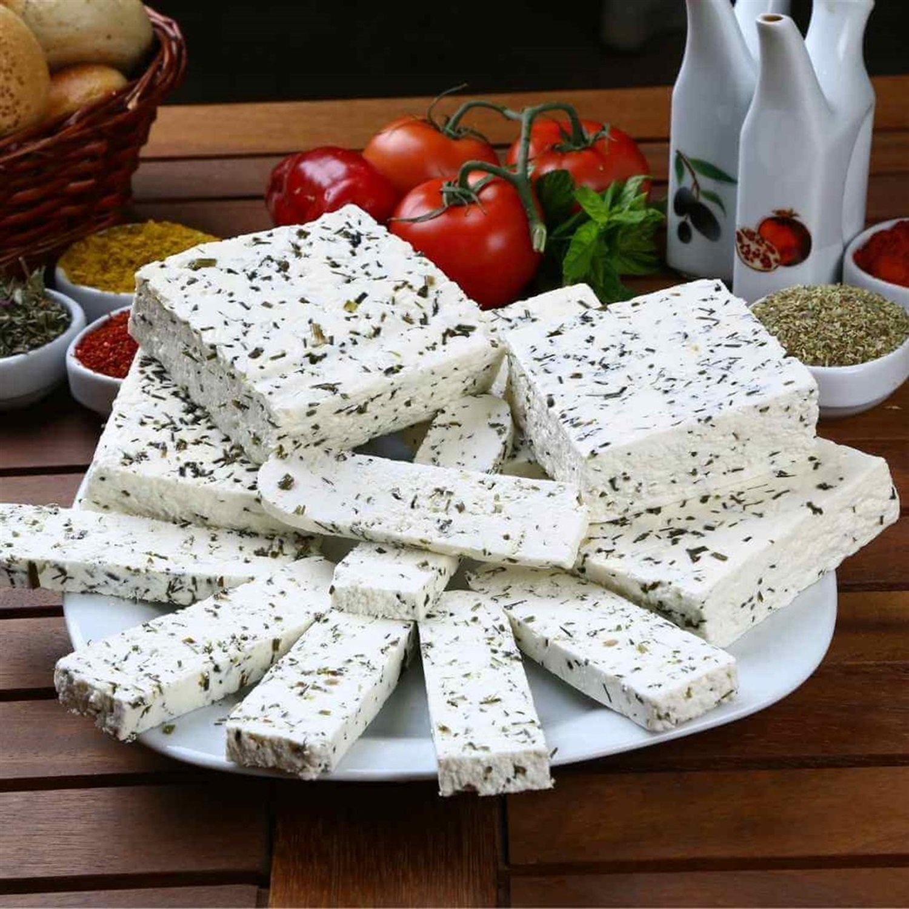
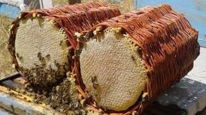
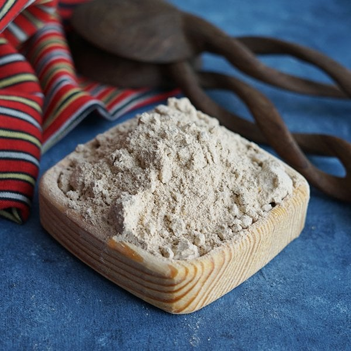
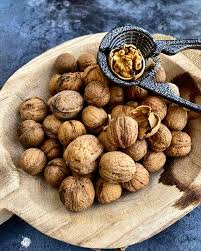

Van Yöresel Ürünleri

Van Otlu Peyniri(1kg)
Van’a özgü otlarla hazırlanan, yoğun aromalı ve geleneksel yöntemlerle olgunlaştırılan meşhur peynir.
₺550
Van Balı(1kg)
Yüksek yaylalarda üretilen, doğal çiçek özleriyle zengin aromaya sahip katkısız bal.
₺800
Kavut Unu(500gr)
Kavrulmuş buğdaydan elde edilen geleneksel Van ürünü. Kahvaltı ve tatlı yapımında kullanılır.
₺170
Van Cevizi(1kg)
İnce kabuklu, doğal aromalı ve besleyici değeri yüksek yöresel ceviz.
₺600